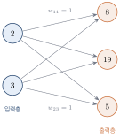
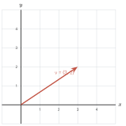

선형대수와 도구
이 장을 마치면
수학은 인류의 다른 어떤 학문보다도 오래된 역사를 가지고 있다. 과거에 사람들이 생각하던 수학은 수의 계산을 위한 좁은 의미의 학문으로 인식되어 산학(算學)으로 불리기도 했으나, 오랜 역사를 거치며 수, 양, 구조, 공간, 변화 등의 폭넓은 개념을 다루는 학문으로 발전하였다. 그중 점·선·면·도형·공간을 다루면 기하학geometry, 추론과 증명의 법칙을 연구하면 논리학logic, 미분과 적분을 기초로 함수의 성질을 연구하면 해석학analysis이라고 부른다.
그리고 선형대수linear algebra는 1차 방정식과 관련된 수학이다. 2차 방정식이나 삼각함수, 로그함수가 들어간 방정식을 풀어 본 독자라면, 고작(?) 1차 방정식을 이렇게까지 깊이 파고드는 학문이 왜 그렇게 중요한지 선뜻 이해되지 않을 수도 있다. 이 장은 바로 그 의문에서 출발한다. 그리고 그 답을 확인할 도구 — 파이썬, 넘파이, 맷플롯립 — 를 손에 쥐는 것으로 마무리한다.
1.1 왜 선형대수를 공부하는가
선형(線型)과 대수(代數)
선형대수라는 말은 "선형"과 "대수"가 결합한 것이다. 선형은 영어 linear를 옮긴 말로, 한자로는 線型이라고 쓴다. 곧은 직선 모양이라는 뜻이다. 대수는 algebra를 옮긴 말로, 수의 관계와 성질, 계산 법칙을 연구하는 학문이다. 그렇다면 선형대수는 "직선과 관련된 수의 학문"쯤이 될 것이다.
직선이라면 여러분이 익히 아는 다음과 같은 식이 떠오를 것이다.
이것은 직선의 방정식이다. 여기까지는 \(x\), \(y\), \(a\), \(b\)가 모두 하나의 숫자, 즉 스칼라scalar 값이었다. 선형대수가 하는 일은 놀랄 만큼 단순하다. 이 식에 등장하는 수를 벡터와 행렬로 바꾸어 놓는 것이다.
식 \(\eqref{eq:ch01_affine}\)을 보라. 굵은 소문자는 여러 개의 숫자를 묶은 벡터vector이고, 굵은 대문자는 숫자를 직사각형으로 늘어놓은 행렬matrix이다. 기호가 굵어졌을 뿐, 모양은 여전히 직선의 방정식 그대로다. 선형대수는 바로 이 식에 들어 있는 수들이 어떤 성질을 가지는지, 이 식을 어떻게 풀 수 있는지를 연구한다.
- 선형대수는 \(y = ax + b\)의 각 항을 벡터·행렬로 확장한 \(\vv{y} = \mm{A}\vv{x} + \vv{b}\)를 다루는 학문이다.
- 다루는 대상이 커졌을 뿐, 근본적인 형태는 여전히 1차식이다. 그래서 "선형"이다.
1차식이 왜 그렇게 중요한가
세상의 현상은 대부분 1차식이 아니다. 그런데도 선형대수가 과학과 공학의 공통 언어가 된 이유는 세 가지로 정리할 수 있다.
첫째, 1차식은 풀 수 있다
미지수가 100만 개인 2차 연립방정식을 풀어 본 사람은 없다. 그러나 미지수가 100만 개인 1차 연립방정식은 오늘날 노트북 한 대로도 풀린다. 방정식의 차수가 1이라는 제약은 우리에게 엄청난 대가를 지불하고 얻은 계산 가능성을 준다. 실제로 과학의 많은 영역에서 연구자들은 복잡한 문제를 선형 문제로 근사approximate한 뒤 푼다. 미분이라는 도구 자체가 "곡선을 아주 짧은 구간에서 직선으로 바꿔 보자"는 발상이라는 점을 떠올려 보면, 선형화가 얼마나 보편적인 전략인지 알 수 있다.
둘째, 데이터는 원래 벡터다
키 172 cm, 몸무게 68 kg, 나이 24세인 사람을 표현해 보자. 숫자 하나로는 불가능하다. 세 개의 숫자를 묶어 \((172, 68, 24)\)로 적어야 한다. 이것이 바로 3차원 벡터다. 사진 한 장은 어떤가. \(28 \times 28\) 크기의 흑백 손글씨 이미지는 784개의 밝기 값을 가지므로 784차원 벡터다. 문장 하나를 언어 모델이 처리할 때 쓰는 임베딩은 보통 수백에서 수천 차원의 벡터다.
즉 데이터를 다룬다는 것은 곧 벡터를 다룬다는 뜻이다. 그리고 벡터를 여러 개 모으면 자연스럽게 행렬이 된다. 100명의 사람을 (키, 몸무게, 나이)로 기록하면 \(100 \times 3\) 행렬이다.
셋째, 컴퓨터가 가장 잘하는 계산이다
행렬 곱은 같은 연산을 수많은 데이터에 독립적으로 반복하는 구조를 가진다. 이런 계산은 병렬화하기 쉽다. GPU가 그래픽 카드의 이름을 달고 있으면서도 인공지능 학습에 쓰이는 이유가 바로 여기에 있다. GPU는 수천 개의 연산 장치로 행렬 곱을 한꺼번에 처리하도록 설계된 장치다. 다시 말해, 문제를 행렬 곱의 형태로 바꿔 놓기만 하면 하드웨어가 알아서 빠르게 처리해 준다.
사실 \(y = ax + b\)는 수학적으로 엄밀히 말하면 선형이 아니라 아핀affine 변환이다. 선형변환은 \(f(\vv{x} + \vv{y}) = f(\vv{x}) + f(\vv{y})\)와 \(f(c\vv{x}) = cf(\vv{x})\)를 만족해야 하는데, 상수항 \(b\)가 있으면 \(f(\vv{0}) = b \neq \vv{0}\)이 되어 이 조건을 어기기 때문이다. 이 구별은 9장에서 자세히 다룬다. 지금은 "직선처럼 곧은 관계"라는 직관만 가지고 가도 충분하다.
선형대수가 답하는 질문들
이 책에서 우리가 답하게 될 질문들을 미리 훑어보자. 지금은 무슨 말인지 몰라도 좋다. 각 질문 옆에 그 답을 다루는 장을 적어 두었다.
| 질문 | 다루는 장 | |
|---|---|---|
| 1 | 두 데이터가 얼마나 비슷한가? 각도로 잴 수 있는가? | 4장 (내적) |
| 2 | 어떤 변환이 공간을 얼마나 늘이고 줄이는가? | 7장 (행렬식) |
| 3 | 미지수 \(n\)개짜리 연립방정식을 컴퓨터는 어떻게 푸는가? | 8장 (소거법) |
| 4 | 어떤 변환을 반복해서 적용하면 결국 어디로 수렴하는가? | 9–10장 (고유값) |
| 5 | 1000차원 데이터를 2차원으로 줄여도 되는가? | 11장 (SVD, PCA) |
| 6 | 해가 없는 방정식의 "가장 그럴듯한 답"은 무엇인가? | 12장 (최소제곱) |
| 7 | 신경망은 왜 행렬 곱의 연속인가? | 13장 (응용) |
이 질문들에는 공통점이 있다. 모두 그림으로 답할 수 있다는 점이다. 내적은 각도이고, 행렬식은 넓이이며, 고유벡터는 방향이 변하지 않는 축이다. 이 책이 계산만큼이나 그리기를 강조하는 이유가 여기에 있다.
1.2 인공지능 시대의 선형대수
퍼셉트론 하나에서 행렬 곱으로
이 책의 주제가 인공지능은 아니지만, 오늘날 인공지능의 핵심 기술인 딥러닝은 철저히 행렬과 선형대수 위에 세워져 있다. 딥러닝을 이루는 인공 신경망artificial neural network은 단순한 퍼셉트론perceptron이 여러 층으로 쌓인 구조이며, 층과 층 사이에서 벌어지는 일은 곱하고 더하는 것이 전부다.
그림 1.1과 같이 두 개의 층으로 이루어진 아주 작은 신경망을 생각해 보자. 입력층의 두 노드가 각각 \(x_1 = 2\), \(x_2 = 3\)이라는 값을 가지고 있고, 이 값들이 가중치weight를 곱한 채로 출력층의 세 노드로 전달된다.

이 그림에서 출력층의 첫 번째 노드가 받는 값은 \(2 \times 1 + 3 \times 2 = 8\)이다. 두 번째 노드는 \(2 \times 2 + 3 \times 5 = 19\)이고, 세 번째 노드는 \(2 \times 1 + 3 \times 1 = 5\)다. 이런 식으로 노드를 하나하나 적어 나가는 것은 노드가 셋일 때는 가능하지만, 실제 신경망에서는 한 층에 수천 개의 노드가 있다. 이것을 일일이 적는 것은 불가능하다.
여기서 행렬이 등장한다. 입력을 행벡터 \(\mm{X}\)로, 가중치를 행렬 \(\mm{W}\)로 묶어 보자.
\(\mm{X}\)의 크기가 \(1 \times 2\)이고 \(\mm{W}\)의 크기가 \(2 \times 3\)이므로 두 행렬의 곱은 \(1 \times 3\) 크기가 된다. 위의 복잡한 그림 전체가 다음 한 줄로 압축된다.
노드가 3개든 3000개든 이 식의 모양은 변하지 않는다. 바뀌는 것은 행렬의 크기뿐이다. 이것이 행렬이라는 표기법의 위력이다. 그리고 이 압축은 단순히 종이 위에서만 이득이 아니다. 넘파이나 GPU는 바로 이 형태의 계산을 한 번에 처리하도록 만들어져 있다.
넘파이를 아직 배우지 않았지만, 위 계산이 실제로 어떻게 생겼는지 미리 보자. 지금은 코드를 이해하지 못해도 좋다. 신경망 한 층이 코드 세 줄이라는 사실만 확인하면 된다.
import numpy as np
X = np.array([[2, 3]]) # 입력 (1x2)
W = np.array([[1, 2, 1], [2, 5, 1]]) # 가중치 (2x3)
print(X @ W) # 행렬 곱 -> 출력 (1x3)[[ 8 19 5]]
학습이란 행렬을 고치는 일이다
신경망을 학습시킨다는 말은 결국 가중치 행렬 \(\mm{W}\)의 숫자들을 조금씩 고쳐 나가는 일이다. 원하는 출력이 나오도록 \(\mm{W}\)를 조정하는 것이다. 그렇다면 자연스럽게 이런 질문이 따라온다.
\(\mm{X}\mm{W} = \mm{Y}\)에서 \(\mm{X}\)와 \(\mm{Y}\)를 알고 있을 때, \(\mm{W}\)를 구할 수 있을까?
이것은 정확히 \(ax = y\)에서 \(x = y/a\)를 구하는 문제의 행렬판이다. 그리고 그 답 — 역행렬(6장), 소거법(8장), 최소제곱과 유사 역행렬(12장) — 이 이 책의 중심 내용이다. 여러분이 딥러닝 교재를 펼쳤을 때 마주치는 수식들은 대부분 이 책에서 다루는 도구들의 조합이다.
| 인공지능의 개념 | 실제로는 선형대수의 무엇인가 |
|---|---|
| 신경망의 한 층 (Dense) | 행렬 곱 + 벡터 덧셈 (5장) |
| 합성곱(convolution) | 국소적인 내적의 반복 (4장) |
| 어텐션의 유사도 점수 | 두 벡터의 내적 (4장) |
| 임베딩의 의미 유사도 | 코사인 유사도 = 정규화된 내적 (4장) |
| 차원 축소, 특징 추출 | 주성분 분석 = 특이값 분해 (11장) |
| 추천 시스템의 행렬 완성 | 저계수 근사 (11장) |
| 회귀 모델의 학습 | 최소제곱 해 = 유사 역행렬 (12장) |
| 그래프 신경망의 전파 | 인접행렬의 거듭제곱 (10장) |
표를 보면 알 수 있듯이, 인공지능에서 어렵게 느껴지는 개념들은 대부분 이름만 새로울 뿐 선형대수의 기본 연산이다. 반대로 말하면, 선형대수를 그림으로 이해해 두면 인공지능 모델의 절반은 이미 읽을 수 있다.
맞다. 만약 신경망이 행렬 곱만 반복한다면 층을 아무리 쌓아도 소용이 없다. \(\mm{W}_2(\mm{W}_1\vv{x}) = (\mm{W}_2\mm{W}_1)\vv{x}\)이므로, 두 층은 결국 하나의 행렬 \(\mm{W}_2\mm{W}_1\)로 합쳐진다. 100층을 쌓아도 1층짜리와 표현력이 같다는 뜻이다.
그래서 층 사이에 ReLU나 시그모이드 같은 활성화 함수activation function라는 비선형 함수를 끼워 넣는다. 이 비선형 덕분에 층을 쌓는 것이 의미를 가진다. 정리하면 신경망 = 선형변환 + 비선형 함수의 반복이며, 그중 무거운 계산과 이론의 대부분은 선형변환 쪽에 있다. 이 책은 그 절반을 담당한다.
인공지능 밖에서도
선형대수가 인공지능 연구자에게만 중요한 것은 아니다. 앞서 언급했듯 많은 문제는 선형 방정식으로 근사할 수 있다. 따라서 독자 여러분이 어떤 분야에서 어떤 문제를 다루든, 선형대수는 언제든 꺼내어 쓸 수 있는 강력한 도구 상자가 된다.
- 컴퓨터 그래픽스 3차원 물체의 회전·이동·확대는 모두 \(4 \times 4\) 행렬 하나로 표현되고, 화면에 그리는 일은 그 행렬을 정점 좌표에 곱하는 일이다.
- 공학 구조물의 변형, 전기 회로의 전류 분포, 열전달 시뮬레이션은 대규모 연립일차방정식으로 귀결된다.
- 통계와 데이터 분석 회귀 분석은 최소제곱 문제이고, 공분산 행렬의 고유값 분해가 곧 주성분 분석이다.
- 검색과 추천 웹 페이지의 순위를 매기는 페이지랭크는 거대한 행렬의 고유벡터를 구하는 문제다.
선형대수는 또한 문제를 바라보는 시각 자체를 바꾼다. 단순히 방정식을 푸는 것을 넘어, 우리가 다루는 문제가 다차원 공간에서 어떤 모양으로 존재하고 어떻게 변형되는지를 직관적으로 이해하게 해 준다. 그 직관은 새로운 문제를 만났을 때 적절한 해법을 찾아내는 기초 역량이 된다.
- 신경망의 한 층은 행렬 곱이며, 학습은 그 행렬의 값을 고치는 일이다.
- 어텐션·임베딩 유사도는 내적, 차원 축소는 특이값 분해, 회귀 학습은 최소제곱이다.
- 선형대수를 안다는 것은 곧 다차원 데이터가 어떻게 변형되는지를 눈으로 그릴 수 있다는 뜻이다.
1.3 실습 도구 준비하기
왜 넘파이와 맷플롯립뿐인가
선형대수를 계산해 주는 파이썬 도구는 아주 많다. 기호 연산을 해 주는 도구도 있고, 벡터 그림을 한 줄로 그려 주는 도구도 있다. 그런데 이 책은 의도적으로 넘파이와 맷플롯립 두 가지만 사용한다. 이유는 단순하다.
편리한 도구는 계산을 대신해 주지만, 동시에 무엇이 계산되는지를 감춘다.
예를 들어 어떤 라이브러리는 plot_vector(v) 한 줄로 화살표를 그려 준다. 편리하다. 그러나 그 한 줄을 쓰는 동안 우리는 "벡터를 그린다는 것은 원점에서 \((v_1, v_2)\)까지 화살표를 놓는 일"이라는 사실을 생각하지 않게 된다. 이 책에서는 그 화살표를 plt.quiver()로 직접 놓는다. 처음에는 번거롭지만, 그 번거로움이 곧 이해다.
물론 같은 코드를 계속 반복해 적는 것은 낭비다. 그래서 자주 쓰는 그리기 코드는 2장에서 tuvis.py라는 작은 모듈로 한 번 만들어 두고, 이후 모든 장에서 불러 쓴다. 이 모듈도 남이 만든 것이 아니라 우리가 직접 만든다는 점이 중요하다.
| 도구 | 역할 | 이 책에서 쓰는 범위 |
|---|---|---|
| 파이썬 | 실행 환경 | 변수, 리스트, 반복문, 함수 정의 |
넘파이 (numpy) | 수치 계산 | 배열 생성, 연산, linalg 하위 모듈 |
맷플롯립 (matplotlib) | 시각화 | plot, quiver, scatter, imshow |
구글 코랩 — 설치 없이 시작하기
구글 코랩Google Colab은 웹 브라우저에서 파이썬 코드를 실행할 수 있게 해 주는 무료 서비스다. 설치가 필요 없고, 넘파이와 맷플롯립이 이미 들어 있으며, 구글 계정만 있으면 바로 쓸 수 있다. 이 책의 모든 예제는 코랩에서 그대로 실행된다.
- 웹 브라우저에서
colab.research.google.com에 접속한다. - 구글 계정으로 로그인한 뒤 [새 노트]를 선택한다.
- 나타난 셀에 코드를 입력하고
Shift + Enter를 누르면 실행된다.
코랩의 노트북은 셀이라는 단위로 이루어져 있다. 코드 셀에 입력한 변수는 다른 셀에서도 그대로 살아 있으므로, 긴 예제를 여러 셀로 나누어 조금씩 실행해 볼 수 있다. 이 책의 코드가 짧게 끊어져 있는 것도 그런 방식으로 실습하기를 염두에 둔 것이다.
내 컴퓨터에 직접 설치하고 싶다면 부록 A를 참고하면 된다. 아나콘다나 pip install numpy matplotlib 한 줄이면 충분하다.
첫 번째 코드 — 버전 확인
먼저 도구가 제대로 준비되었는지 확인하자.
import numpy as np
import matplotlib.pyplot as plt
print('NumPy :', np.__version__)
print('Matplotlib :', plt.matplotlib.__version__)NumPy : 2.4.4 Matplotlib : 3.10.9
버전 숫자는 실행 시점에 따라 다를 수 있다. 오류 없이 두 줄이 출력되었다면 준비는 끝났다. import numpy as np에서 as np는 앞으로 numpy를 np라는 짧은 이름으로 부르겠다는 뜻이며, 사실상 전 세계가 따르는 관례다. 맷플롯립도 plt로 줄여 쓴다.
첫 번째 그림 — 벡터 하나 그리기
이제 이 책이 어떤 식으로 진행되는지 맛보기로 확인하자. 벡터 \(\vv{v} = (3, 2)\)를 화면에 그려 볼 것이다. 벡터를 그린다는 것은 원점에서 시작해 \((3, 2)\) 지점에서 끝나는 화살표를 놓는 일이다. 맷플롯립에서 화살표를 그리는 함수는 quiver()이며, 인자는 순서대로 (시작점 \(x\), 시작점 \(y\), 방향 \(x\), 방향 \(y\))이다.
import numpy as np
import matplotlib.pyplot as plt
v = np.array([3, 2]) # 그릴 벡터
fig, ax = plt.subplots(figsize=(4, 4))
ax.quiver(0, 0, v[0], v[1], # (0,0)에서 (3,2) 방향으로
angles='xy', scale_units='xy', scale=1,
color='crimson', width=0.012)
ax.text(v[0] * 0.55, v[1] * 0.55 + 0.3, 'v = (3, 2)', color='crimson')
ax.set_xlim(-1, 5) # 보기 좋은 범위로 고정
ax.set_ylim(-1, 5)
ax.set_aspect('equal') # 가로세로 비율 1:1 (매우 중요)
ax.grid(True, alpha=0.3)
ax.axhline(0, color='black', lw=0.8) # x축
ax.axvline(0, color='black', lw=0.8) # y축
plt.show()
그림 1.2가 실행 결과다. 코드에서 특히 눈여겨볼 두 줄이 있다.
angles='xy', scale_units='xy', scale=1이 세 옵션이 없으면 맷플롯립은 화살표의 길이를 제멋대로 조정한다. 이 옵션을 주어야 "\((3,2)\)만큼 이동"이 화면에서도 정확히 그만큼으로 그려진다.ax.set_aspect('equal')가로와 세로의 축척을 같게 만든다. 이것이 없으면 직각이 직각으로 보이지 않고 원이 타원으로 보인다. 선형대수 그림에서는 사실상 필수다.
set_aspect('equal')을 빠뜨리면 벡터의 각도와 길이가 왜곡되어 보인다. 내적이 0인 두 벡터가 화면에서 직각으로 보이지 않는다면 십중팔구 이 한 줄을 잊은 것이다. 이 책의 시각화 함수는 모두 이 설정을 기본으로 포함한다.
맷플롯립은 기본 폰트에 한글이 없어서, 한글 제목을 넣으면 글자가 네모(–두부 문자)로 표시된다. 한글 폰트를 따로 등록하면 해결되지만 운영체제마다 방법이 달라 코드가 지저분해진다. 이 책은 그림 속 문자열을 모두 영어로 적어 어떤 환경에서도 그대로 실행되도록 했다. 대신 코드의 주석은 한국어로 충실히 달아 두었다.
이 책의 학습 리듬
앞으로 모든 개념은 다음 네 박자로 진행된다.
③에서 ④로 가는 화살표가 이 책의 핵심이다. 넘파이가 내놓은 숫자를 믿는 것으로 끝내지 않고, 그 숫자가 무엇을 뜻하는지 반드시 그림으로 확인한다. 숫자는 맞는데 그림이 이상하다면 개념을 잘못 이해한 것이고, 그것을 발견하는 것이야말로 학습의 가장 좋은 순간이다.
- 코랩 노트를 만들고 신경망 한 층을 계산해 보자. 입력 \(\mm{X} = [2\ 3]\)과 가중치 행렬 \(\mm{W}\)의 곱을 구하고, 가중치를 두 배로 키우면 출력이 어떻게 변하는지 확인하시오.
import numpy as np X = np.array([[2, 3]]) W = np.array([[1, 2, 1], [2, 5, 1]]) print('Y =', X @ W) print('Y (2W) =', X @ (2 * W)) # 가중치를 2배로Y = [[ 8 19 5]] Y (2W) = [[16 38 10]]
출력이 정확히 두 배가 되었다. 이것이 바로 "선형"이라는 말의 뜻이다. 입력이나 가중치를 \(c\)배 하면 출력도 정확히 \(c\)배가 된다.
- 벡터 세 개를 한 그림에 그려 보자. \((3,2)\), \((-2,3)\), \((1,-3)\)을 서로 다른 색의 화살표로 그리시오.
import numpy as np import matplotlib.pyplot as plt vs = np.array([[3, 2], [-2, 3], [1, -3]]) # 3개의 벡터를 행으로 쌓음 colors = ['crimson', 'royalblue', 'seagreen'] fig, ax = plt.subplots(figsize=(4.5, 4.5)) for v, c in zip(vs, colors): ax.quiver(0, 0, v[0], v[1], angles='xy', scale_units='xy', scale=1, color=c, width=0.012) ax.text(v[0] * 1.08, v[1] * 1.08, f'({v[0]}, {v[1]})', color=c) ax.set_xlim(-4, 4); ax.set_ylim(-4, 4) ax.set_aspect('equal'); ax.grid(True, alpha=0.3) ax.axhline(0, color='black', lw=0.8); ax.axvline(0, color='black', lw=0.8) plt.show() - 좌표 목록을 점으로 찍어 보자. 다섯 사람의 (키, 몸무게) 데이터를 산점도로 그리시오. 데이터 하나가 곧 2차원 벡터 하나라는 점을 확인하는 것이 목적이다.
import numpy as np import matplotlib.pyplot as plt # 각 행이 한 사람: (키 cm, 몸무게 kg) people = np.array([[172, 68], [160, 52], [181, 79], [168, 60], [155, 47]]) fig, ax = plt.subplots(figsize=(4.5, 4)) ax.scatter(people[:, 0], people[:, 1], s=60, color='darkorange') for h, w in people: ax.annotate(f'({h}, {w})', (h, w), textcoords='offset points', xytext=(5, 5), fontsize=8) ax.set_xlabel('height (cm)'); ax.set_ylabel('weight (kg)') ax.grid(True, alpha=0.3) plt.show()people[:, 0]은 "모든 행의 0번 열", 즉 키만 모은 것이고people[:, 1]은 몸무게만 모은 것이다. 이렇게 \(5 \times 2\) 행렬 하나가 다섯 개의 데이터 벡터를 담는다. - 선형이 아닌 관계와 비교해 보자. \(y = 2x\)와 \(y = x^2\)을 같은 그림에 그려, 왜 하나만 "직선"인지 눈으로 확인하시오.
import numpy as np import matplotlib.pyplot as plt x = np.linspace(-3, 3, 100) # -3부터 3까지 100개의 점 fig, ax = plt.subplots(figsize=(4.5, 4)) ax.plot(x, 2 * x, label='y = 2x (linear)', lw=2) ax.plot(x, x ** 2, label='y = x^2 (nonlinear)', lw=2, ls='--') ax.axhline(0, color='black', lw=0.8); ax.axvline(0, color='black', lw=0.8) ax.legend(); ax.grid(True, alpha=0.3) plt.show()\(y = 2x\)는 입력을 두 배 하면 출력도 두 배가 된다(\(f(2) = 4\), \(f(4) = 8\)). 그러나 \(y = x^2\)은 입력을 두 배 하면 출력이 네 배가 된다(\(f(2) = 4\), \(f(4) = 16\)). 이 성질의 차이가 선형과 비선형을 가른다.
- 큰 행렬을 곱해 보고 시간을 재 보자. \(1000 \times 1000\) 행렬 두 개의 곱이 얼마나 걸리는지 측정하시오. 10억 번의 곱셈과 덧셈이 벌어지는 계산이다.
import numpy as np import time n = 1000 A = np.random.rand(n, n) # 0~1 사이 난수로 채운 1000x1000 행렬 B = np.random.rand(n, n) start = time.time() C = A @ B print(f'{n}x{n} matmul : {time.time() - start:.3f} sec') print('result shape :', C.shape)1000x1000 matmul : 0.009 sec result shape : (1000, 1000)
곱셈만 \(1000^3 = 10^9\)번 필요한 계산이 0.05초 안에 끝난다. 신경망을 학습시킬 수 있는 것은 이런 계산이 이만큼 빠르기 때문이다. 다음 장에서 넘파이가 어떻게 이 속도를 내는지 알아본다.
1장 요약
- 선형대수는 직선의 방정식 \(y = ax + b\)의 각 항을 벡터와 행렬로 확장한 \(\vv{y} = \mm{A}\vv{x} + \vv{b}\)를 연구하는 학문이다. 다루는 대상이 커졌을 뿐 식의 차수는 여전히 1이며, 그래서 "선형"이라고 부른다.
- 1차식이 중요한 이유는 세 가지다. 풀 수 있고(미지수가 수백만 개여도 계산 가능), 데이터가 원래 벡터이며(키·몸무게·나이, 이미지의 픽셀, 문장의 임베딩), 컴퓨터가 가장 잘하는 계산(GPU의 병렬 처리)이기 때문이다.
- 인공 신경망의 한 층이 하는 일은 행렬 곱이다. 입력 \(\mm{X}\)에 가중치 행렬 \(\mm{W}\)를 곱하면 출력 \(\mm{Y}\)가 나오며, 노드가 몇 개든 식의 형태는 \(\mm{Y} = \mm{X}\mm{W}\)로 동일하다.
- 신경망의 학습은 가중치 행렬의 값을 조정하는 일이다. \(\mm{X}\mm{W} = \mm{Y}\)에서 \(\mm{W}\)를 구하는 문제가 곧 역행렬(6장), 소거법(8장), 최소제곱(12장)이다.
- 인공지능의 주요 개념들은 선형대수의 기본 연산으로 환원된다. 어텐션의 유사도는 내적, 차원 축소는 특이값 분해, 회귀 학습은 최소제곱, 그래프 전파는 행렬의 거듭제곱이다.
- 신경망이 층을 쌓는 것이 의미를 가지려면 층 사이에 비선형 활성화 함수가 있어야 한다. 선형변환만 반복하면 \(\mm{W}_2(\mm{W}_1\vv{x}) = (\mm{W}_2\mm{W}_1)\vv{x}\)가 되어 한 층과 표현력이 같아지기 때문이다.
- 이 책은 넘파이(수치 계산)와 맷플롯립(시각화) 두 가지 라이브러리만 사용한다. 고수준 도구가 계산 과정을 감추는 것을 막고, 그림을 직접 그리는 과정에서 개념을 익히기 위해서다.
- 구글 코랩을 이용하면 설치 없이 브라우저에서 모든 예제를 실행할 수 있다. 관례에 따라
import numpy as np,import matplotlib.pyplot as plt로 불러 쓴다. - 벡터를 그리는 함수는
plt.quiver(x, y, u, v)이며, 반드시angles='xy', scale_units='xy', scale=1옵션과ax.set_aspect('equal')을 함께 지정해야 길이와 각도가 왜곡되지 않는다. - 이 책의 모든 개념은 개념 – 손 계산 – 넘파이 – 그림의 네 박자로 진행된다. 계산 결과를 믿고 넘어가지 않고 반드시 그림으로 확인하는 것이 핵심이다.
1장 연습문제
- ★ 선형대수라는 이름에서 "선형"과 "대수"가 각각 무엇을 뜻하는지 설명하고, \(y = ax + b\)와 \(\vv{y} = \mm{A}\vv{x} + \vv{b}\)가 어떤 점에서 같고 어떤 점에서 다른지 서술하시오.
- ★ 다음 중 이 책에서 말하는 "벡터로 표현되는 데이터"의 예로 적절하지 않은 것을 고르고 그 이유를 쓰시오.
- 어떤 사람의 (키, 몸무게, 나이)
- \(28 \times 28\) 크기 흑백 이미지의 픽셀 밝기 값
- "오늘 날씨가 좋다"라는 문장 그 자체
- 한 상점의 12개월 매출액
- ★★ 입력 \(\mm{X} = [1\ 4]\)와 가중치 \(\mm{W} = \begin{bmatrix} 2 & 0 & 3 \\ 1 & 5 & -1 \end{bmatrix}\)에 대하여 \(\mm{Y} = \mm{X}\mm{W}\)를 손으로 계산하시오. 그 다음 넘파이로 확인하시오.
- ★★ 앞 문제의 \(\mm{X}\)를 세 배로 키운 \(3\mm{X}\)에 대해 \(\mm{Y}\)가 어떻게 변하는지 손으로 예측한 뒤 코드로 확인하시오. 이 성질에 이름을 붙인다면 무엇이라고 부를 수 있겠는가?
- ★★ 신경망에서 활성화 함수를 모두 제거하고 선형변환만 100층 쌓았다고 하자. 이 신경망의 표현력이 1층짜리와 같아지는 이유를 식으로 설명하시오.
- ★★ 벡터 \((4, -3)\)을 화살표로 그리는 코드를 작성하시오. 단,
ax.set_aspect('equal')을 넣은 그림과 뺀 그림을 나란히 그려 차이를 관찰하시오. (힌트:fig, (ax1, ax2) = plt.subplots(1, 2)) - ★★★ 다음 코드의 출력 결과를 예측하고, 실행하여 확인하시오.
두 결과가 다른 이유를 설명하시오.import numpy as np A = np.array([[1, 2], [3, 4]]) B = np.array([[1, 0], [0, 1]]) print(A @ B) print(A * B) - ★★ 1.2절의 표를 참고하여, 다음 인공지능 개념이 선형대수의 어떤 연산에 대응하는지 짝지으시오.
- 두 문장 임베딩의 의미 유사도
- 1000차원 특징을 2차원으로 줄여 시각화
- 관측 데이터에 가장 잘 맞는 직선 찾기
- ★★★ \(500 \times 500\), \(1000 \times 1000\), \(2000 \times 2000\) 행렬 곱의 실행 시간을 각각 측정하고, 크기가 두 배가 될 때 시간이 몇 배로 늘어나는지 확인하시오. 이론적으로 예상되는 배수는 얼마인가? (힌트: 행렬 곱의 연산량은 \(n^3\)에 비례한다)
- ★★★ 좌표 목록 \((1,1)\), \((2,3)\), \((4,2)\), \((5,5)\)를 산점도로 그리고, 이 점들을 지나는 "가장 그럴듯한 직선"을 눈대중으로 그려 넣으시오. 이 직선을 계산으로 찾는 방법이 12장의 최소제곱법이다.
- ★★★ 이 책이 고수준 시각화 라이브러리를 쓰지 않는 이유를 본문의 주장을 참고하여 설명하고, 이에 대한 자신의 생각을 서술하시오. 반대 의견도 좋다.